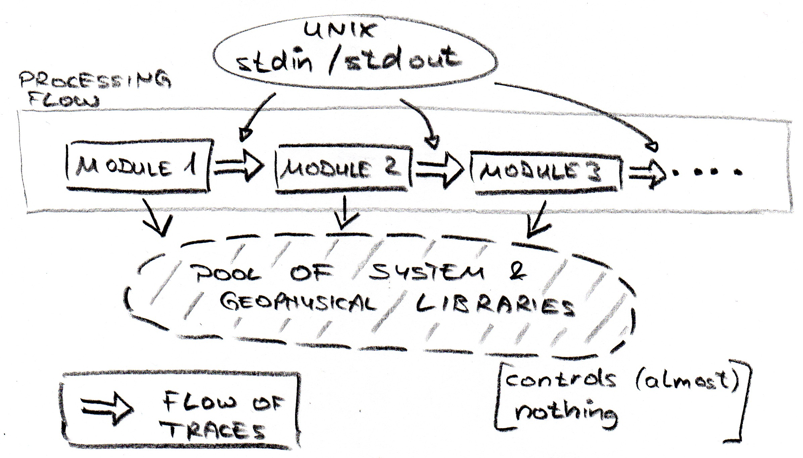
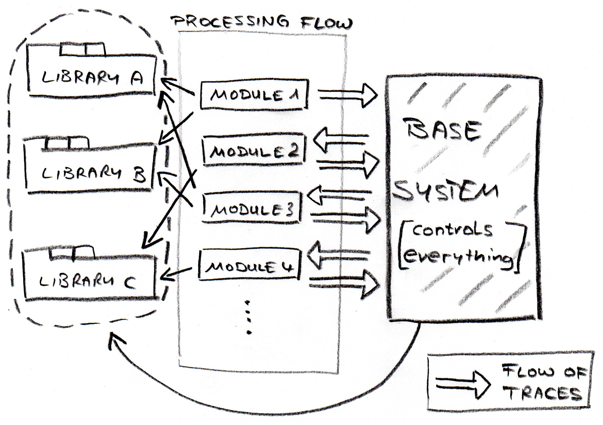
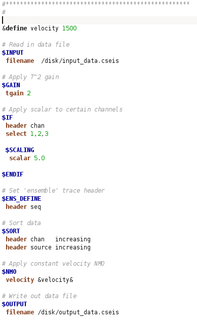

|
Release notes
How to install
Introduction and background
Technical reference
How to add a new module
Help - Modules and standard headers
SeaView Tutorial
Updates in v2.00 compared to v1.92
New ownership:
- Seaseis is now owned by Colorado School of Mines, USA
New distribution license:
- Seaseis is now distributed using the Free BSD license (previously GPL 3)
FFTW:
- Due to incompatibilities with the new license, the fftw library source code has been removed from Seaseis. This means, fftw is now an external dependency
- Install fftw separately from www.fftw.org (or for example using your Linux package manager)
- If the fftw library is not installed on your system, the FFT module will be built with an alternative fft library, and FFT_2D will be an empty shell
Mini SEED reader:
- Due to incompatibilities with the new license, the Mini SEED library source code from IRIS has been removed from Seaseis
- The source code for module INPUT_MSEED is still there (under src/cs/unused), but is not compiled. If you need this module, you will need to install the Mini SEED library yourself.
Build scripts:
- Removed fftw library source code from Seaseis due to license update
- Major updates to build scripts make_seaseis.sh and src/make/linux/cmake.sh
- Simplify user setup of installed compiler versions for C, C++ and Fortran
- Makefile_libs: Added -ldl directive to make Seaseis system library in order to fix link errors for dlopen etc.
SeaSeis general:
- Support for RSF (seplib/Madagascar) format (3D cubes only)
Modules:
- New modules: INPUT_RSF, OUTPUT_RSF (3D cubes only)
- INPUT: Enable trace selection and sorting based on one user defined trace header
- INPUT_SEGY: Enable trace selection and sorting based on one user defined trace header
- INPUT_ASCII: Bug fixed when reading in ASCII files (could cause crashes, or incorrect sample values being assigned to trace). Skip potentially empty lines in ASCII input file. Skip leading spaces. Assign zero or linear phase to input amplitude spectrum.
- SORT: Fixed minor bug related to input option 'tree'.
- TRC_MATH: Add option to compute dB for amplitude and power. New option to 'flip' trace, so that last sample becomes first sample.
- TRC_MATH_ENS: New option: Apply sliding 3D mean filter
- ATTRIBUTE: Enable attribute selection based on seimsic input horizon
- PICKING: Pick specific value in input trace
- INPUT_SINEWAVE: Fixed bug in case phase is not specified
Seaview:
- Support for RSF (seplib/Madagascar) format (3D cubes only)
- Better support for SU/SEGY files stored in any endian byte format:
- New user options allow user to specify input file endian byte order. The selections are saved until next session.
- Save user specified color bit type until next session.
Mac OS:
- Various updates to build scripts and platform dependent pieces of code to enable build on Mac OS
- The build has been tested on Snow Leopard 32bit
Seismic Unix:
- Seaseis now compiles a number of SU modules directly into Seaseis, and tentatively supports running Seismic Unix modules via a new Seaseis module called $SU
- Several functions used in some SU modules have not been ported yet; these modules may not run properly
- Otherwise, the biggest limitation is that each SU module can only be specified once per Seaseis flow, due to global and/or static variables being used in the SU code
- See README_SEISMIC_UNIX for more details
Installation
Please follow the instructions below.
Summary: Run the make scripts and include the SeaSeis binary directory into your PATH. All make scripts are hard-wired to the GNU C/C++ compilers and make utility. For the seismic viewer, SUN/Oracle Java 6 needs to be installed. The source tar ball includes a make utility for the Java source code, but I recommend using the provided jar files (unless you run into problems with these since you are using an older version of the Java run-time environment/JRE).
Linux/UNIX Installation
- Extract the tar ball anywhere on your system (for example into /opt/seaseis, and it will end up in /opt/seaseis/seaseis_v2.00), go into the subdirectory seaseis_v2.00 and run the script make_seaseis.sh:
./make_seaseis.sh
- Add the 'bin' directory to your path (environment variable $path).
Example for tcsh shell: set path = ($path /opt/seaseis/bin)
Example for bash shell: export PATH=${PATH}:/opt/seaseis/bin
- It seems that with certain system setups, you may also need to set the library path environment variable $LD_LIBRARY_PATH to include the 'lib' directory (I don't know exactly when this is necessary, maybe with mounted disk drives..?)
- Test SeaSeis on the command line
seaseis -h should give a listing of command line options
seaseis -m input should give a short online help for the SeaSeis input module
seaview.sh should open SeaView, the interactive 2D viewer (Java application)
- Run example SeaSeis flows
cd example_flows to go into the example flow directory
./run_flows.sh to run all example flows. This should pop up several SeaView windows when finished.
Dependencies
- GNU make utility
- GNU C (gcc) and C++ (g++) compilers. Any version should do, my current version is 4.4.3.
- GNU C (gfortran) compiler. This is only required for one module (RAY2D). If you are having problem to build this module, you can remove it by removing the directory src/cs/modules/ray2d, and remove the corresponding line in the file src/include/cseis_modules.txt
- Java 6 run time environment (JRE SE 6).
- The version I am currently using is 1.6.0_20. SUN/Oracle Java is sometimes included in standard Linux distributions, but may also need to be downloaded and installed manually from the Java home page.
Unfortunately, installing Java has become more complicated recently both for developers and users since there are now two competing versions:
An open-source version "OpenJava", and the Oracle version. I don't really know which one is better, but for Java 6.0 I recommend the Oracle version.
External library fftw
- In order to make use of the high-performance library fftw for modules $FFT and $FFT_2D, fftw needs to be installed separately avoid external dependencies it has been included in the source distribution of SeaSeis.
- All make and build scripts are the original files downloaded from the fftw web site, extended by some additional wrapper scripts
- I am not sure what type of problems may occur with the build of this library. Send me an email if you are having problems
Windows Installation
The distribution contains pre-compiled binaries for Windows operating system (32bit and 64bit). Previous versions have reportedly had unresolved dependencies; this has hopefully been resolved by linking all gcc and gfortran libraries statically. The source code can also be compiled using the make utility make_seaseis_win32/64.bat, or the equivalent shell script for Linux (ending in .sh).
Installation from binaries
- Installation...
...from binaries:
- Extract the zip file anywhere on your system (for example to C:\Seaseis).
...from source:
- Install the MinGW compiler suite. This is straightforward on a Win32 system since there is an install wizard, but in my experience on a Win64 system it is not. This is why I compiled the Win binaries with the MinGW cross-compiler from Linux
- Extract the tar ball anywhere on your system (for example to C:\Seaseis), and run the script make_seaseis_win32.bat in a DOS window.
make_seaseis_win32.bat
- Add the 'bin' directory (for example C:\Seaseis\win32\bin) to your path. This is done under Control Panel -> System -> Advanced Settings -> Environment Variables -> Path
- Test SeaSeis
In a DOS window: seaseis -h should give a listing of command line options
In Windows Explorer, double-click on C:\Seaseis\win32\bin\seaview.bat. This should open SeaView, the interactive 2D viewer (Java app). To fault-find in case of problems, navigate to the folder C:\Seaseis\win32\bin in a DOS window and run the command seaview.bat manually. This will print potential error messages to the screen.
- Run example SeaSeis flows
cd example_flows to go into the example flow directory
run_flows.bat to run all example flows. This should pop up several SeaView windows when finished.
Dependencies
- MinGW compiler suite, including the GNU C/C++/gfortran compilers and make utility. This can be used as a cross-compiler on Linux, or directly in Windows. Any C++ compiler should work but the make scripts are currently hardwired to MinGW.
- Java 6 run time environment (JRE SE 6) as discussed above under the Linux installation help
SeaSeis is a sequential trace flow system, following the same basic concept of most other existing seismic processing systems.
By one measure, processing systems can be categorised into 2 camps:
- Processing systems that are using standard I/O for passing traces from module to module, and
- Processing systems that have a base system for managing the trace flow.
(see sketches below)
Open-source systems
Seaseis is an open-source program, following the above design (2).
Other open-source systems I am aware of follow design (1), i.e. using UNIX standard I/O for their trace flow. These are Seplib, SU, FreeUSP and RSF/Madagascar, which are all derived from the same code base and conceptual idea, and are historically linked. An exception is SIA/IGeoS, which is an open-source (or semi-commercial?) system that follows the design (2).
Commercial/proprietary systems
All commercial systems I am aware of have a base system which manages the trace flow, i.e. following design (2). SeaSeis resembles more the design of a commercial systems, providing a base system which manages the trace flow.
Processing systems using standard I/O

Processing systems with base system

- Flow
- A processing flow is an ASCII text file where the user defines the modules and parameters to perform a certain processing task. The processing flow is translated by the processing system into an executable process.
- Job
- A processing job is the process of running a processing task. The same processing flow may be submitted more than once. Each submission is running a new processing job.
- Log
- A log file documents what happened in each processing job. The log contains all information related to the processing flow that was submitted, and to the actual job that was run. The log file is the means by which the processing system communicates with the user, for example by giving error messages and other job related information.
- Trace
- SeaSeis is a sequential trace flow system. All data is passed through the processing flow as single traces. A trace consists of a trace header, and trace data.
- Trace header
- The trace header is dynamic and can hold an arbitrary number of trace header fields. The term trace header is often used in SeaSeis as a synonym for trace header field.
- Trace data
- The trace data is the seismic data itself. SeaSeis only has one data type option, i.e. 32bit floating point.
- Super header
- The super header is a mostly pre-defined block of header fields that contains information about all traces passing through one processing module. The super header contains:
- Number of trace data samples
- Sample interval
- Ensemble header names(s)
- Survey information
- Number of trace header fields in each trace header
- Type, name and description of each trace header field
Super header fields cannot be directly modified by the user, so the super header concept is in most cases not relevant to know for the user. The trace header and super header concept is very common in seismic processing systems, as can be seen for example in the SEG-Y standard data format.
Command line submission
Typing 'seaseis -h' on the command line produces the following help listing
SeaSeis job flow submission tool.
Usage: seaseis -f <jobflow> [-o <joblog> | -d <joblog_dir>] [-h] [-m <name>] [-v] [-c] [-std] [-p {speed|memory} ] [-g <const_file>] [-s <spreadsheet>]
-f <flow1> <flow2> ... : File name(s) of job flow(s) to run
-o [<log>|stdout] : File name of job log (defaulted to flowname.log if not specified)
: Use 'stdout' to redirect all log file output to standard output
-d <log_dir> : Name of directory where job log shall be saved
-s <spreadsheet file> : Name of file containing spread sheet for building of master flow
-g <global const. file>: Name of file containing global constants (&define statements)
-D <name1>[=,:]<val1> <name2>[=,:]<val2> ... : Define user constant <name>, value <val>. No spaces allowed around equal sign.
NOTE: The first user constant will be used to create the log file name.
-ff <flow_out> : Name of file where job flow shall be saved (only works when -D option is specified).
-m <name> : Print help for module <name>.
: If no module is found, print help of all modules starting with <name>.
: If <name> = empty: Print full help for all available modules.
: If <name> = .: Print short help for all available modules.
-run_master : Immediately run all flows created from master flow(s)
: If not specified, the program will exit after the master flows have been created.
-h : Print this page
-html : Print full help for all modules & standard trace headers in HTML.
-v : Print out version info
-std : Dump all standard trace headers
-c : Check for link problems and consistency of all modules' params(=help) methods.
-p [speed | memory] : Set memory policy: Optimised for speed or memory.
-no_run : Do not run flow. This option is useful if an individual flow file is generated using option -ff
-init_only : Run init phase only.
-no_verbose : Do not output information messages.
-debug : Output extensive DEBUG information for trace flow preparation and execution.
Flow syntax
SeaSeis processing flows are written in a simple ASCII format that follows a handful of syntactic rules.
Special characters
- $MODULE_NAME
- ...followed by capital letter word: Name of module
- # User comment
- All text to the right of a hash sign are user comments
Parameter and values
The first word in each line is a pre-defined parameter name, while the remaining part consists of free-form text or numbers, depending on what type of input parameter is required. All words in the flow file can be space- or tab-separated. Single parameter values that contain spaces must be enclosed by double quotation marks "".
Examples:
param_name val1 val2 val3 ...
equation "sqrt(val1) + pow(val2,2) - val3*(val2 - val1)"
Key words
- &define constant_name constant_value
- Defines user constant name and value available throughout the flow script. Each occurrence of &constant_name& anywhere in the processing flow is replaced by constant_value before running the flow
- &table table_name filename_path
- Defines ASCII table available to all modules in flow, and can be referenced by table_name
Flow branching
SeaSeis provides two ways of flow branching
- IF-ELSEIF-ELSE-ENDIF block
Each trace flows through either the IF branch, one of the ELSEIF branches or the ELSE branch. All traces merge together into the main flow at the ENDIF.
- SPLIT-ENDSPLIT block
Each trace selected in the SPLIT module is copied into an independent branch where the trace is processed separately from the main flow. Traces copied into the SPLIT branch are not merged back into the main flow, and are discarded at the ENDSPLIT.
Example flow

Selection syntax
Many modules provide trace selection based on trace header values.
The parameters used for trace selection are usually:
| header |
List of trace header names, separated by spaces |
| select |
List of selection expressions, separated by colons (:) |
The selection syntax is the same as in Promax, plus a few additions. The examples below illustrate each syntactic item:
| select 1000 |
Select single value |
| select 1000,2000 |
Select several values separated by commas |
| select 1000-2000 |
Select range of values |
| select 1000-2000(10) |
Select every 10'th value in range 1000 and 2000 |
| select <1000 |
Select values below 1000 |
| select >1000 |
Select values above 1000 |
| select !1000 |
Omit single value |
| select 10-20/100-200/>500 |
Use slashes to list several selections. In this example, all traces with values 10-20, 100-200, and above 500 will be selected. This means a forward slash (/) performs an OR operation. |
| ---------------------------------------------- |
| header hdr1 hdr2 |
| select 10-20:1/100-200:4/>500:5 |
In this example, two trace headers were specified for selection (hdr1 and hdr2). All traces with hdr1=10-20 AND header2=1, OR hdr1=100-200 AND hdr2=4, OR hdr1>500 AND hdr2=5 will be selected. |
| select 1000:345 |
If several trace headers were specified under parameter 'header', the selection expressions of both have to be separated by colons. This example selects all traces for which hdr1 = 1000 and hdr2 = 345 |
| select 1000:345/445/545 |
This example selects all traces which have hdr1 = 1000, and hdr2 = 345, 445 or 545 |
| select 1000:* |
Use the star (*) to select all values for a particular trace header |
|